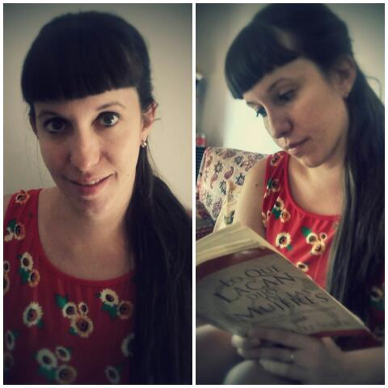

Alejandra Vanesa Federico
10 de Mayo de 1986, Capital Federial. Argentina
Estudios Académicos
LICENCIATURA EN PSICOLOGíA- Facultad de Psicología UBA.
DIPLOMA DE HONOR.
MN: 51.801
Profesorado en Psicología- Facultad de Psicología UBA.
Posgrado comunitario en psicoterapia infanto- juvenil- Servicio Comunitario Emanuel
Posgrado en psicoanálisis con niños, adolescentes y adultos- Nuevo Centro
Acompañamiento psicoterapéutico- Gobierno de la Ciudad de Buenos Aires
Experiencia Profesional
2011- 2017: Atención de pacientes en consultorio.
2015-2017: Grupo Laqueus : grupo interdiciplinario de atención integral a la Salud. Psicóloga
2015-2016: Centro Ni uno Menos: Integración escolar: Escuela E.F.E.D.I
Integración escolar en nivel primario- diagnóstico: Retraso Mental
Confección de PPI y adaptaciones curriculares.
2013- 2015: Centro Cari: Integración escolar: Escuela Alberto Scheweitzer
Integración escolar en nivel preescolar- diagnóstico: TGD.
Confección de PPI y adaptaciones curriculares.
2013: Centro de día "Nuestra Señora de Luján".
Psicóloga a cargo del Talleres para los pacientes con trastornos psicopatológicos.
Redacción de evoluciones, historias clínicas e informes.
Instituto de salud mental "Nuestra Señora de Luján"- Hogar con Centro Educativo Terapéutico
2013: Co-ayudante de cátedra "Psicología evolutiva: Niñez" Facultad de Psicología UBA. Mail: ninez2@psi.uba.ar
2012- 2015: Nuevo Centro.
Atención de pacientes en consultorio (niños, adolescentes y adultos)
Teléfono: 4901-1414/ 4904-1289
2011- 2012: Servicio Comunitario Emanuel: Terapeuta de niños y adolescentes.
Psicodiagnóstico a niños y adolescentes. Aplicación de técnicas de evaluación proyectivas y psicométricas.
Tratamiento psicoterapéutico a niños y púberes, desde un marco teórico psicoanalítico.
2010: Hospital Interdisciplinario Psicoasistencial José Tiburcio Borda
Práctica Profesional de grado: "Clínica de la Urgencia" (UBA). Rotación por los dispositivos de Servicio de Emergencias 1; Servicio de Admisión y Guardia del Hospital.
Práctica Profesional de grado: "Hospital de día y problemáticas clínicas contemporáneas" (UBA) Servicio Nro 28
2008: Hospital Infanto- Juvenil Tobar Carolina García- Acompañante psicoterapéutico
Pacientes púberes y adolescentes en el servicio de internación de hospital.
Cursos, Jornadas y Seminarios realizados
- Primeras Jornadas de la Practica Profesional "Clínica del síntoma". Viernes 29 y sábado 30 de junio de 2007. Facultad de Psicología (UBA)
- 2do cuatrimestre 2007: Acompañamiento terapéutico: Centro Cultural Ricardo Rojas- TCC.
- Primeras Jornadas "Psicología y problemas éticos en la sociedad contemporánea". Viernes 25 y sábado 26 de abril de 2008. Facultad de Psicología (UBA)
- 28 de mayo 2008. Seminario: "Deleuze y la clínica: Articulación con Lacan". Episteme: un espacio de clínica, investigación y cultura
- XI Jornada Trabajos y Resistencias del Psicoanálisis, Trabajo de Resistencias al Psicoanálisis. Sábado 1ro de Noviembre de 2008. Facultad de Psicología (UBA).
- Curso de verano 2009: Facultad de Farmacia y Bioquímica UBA, Curso: "Gestión de Recursos Humanos".
- 10/08 al 28/09 del 2010 Seminario: ética, Transferencia y Dirección de la Cura en Psicoanálisis. Escuela del Psicoanálisis del Borda. A cargo de Lic. Ana Rickert. Hospital Borda.
- 18/09/2010- Jornada APA: "La sexualidad, histeria, cuerpo y falo (la otra mujer, el vestido y la moda)". APA Comisión del Interior.
- 16/10/2010- Jornada APA "Los bordes en la histeria. Enfermedad psicosomática. Anorexia. Acting out y pasaje al acto". APA Comisión del interior
-13/11/2010- Jornada APA "Las Depresiones". APA Comisión del interior.
- Enero 2011: Pasantía Clínica Psicoanalítica en "Nuevo Centro". Servicio de Admisión.
- 12/09/2011- 21/11/2011: Seminario Extensión UBA: "Niñez y adolescencia. Lo parental. Lo vincular. Problemáticas recurrentes. Dispositivos y modalidades de intervención"
- Junio 2012- Diciembre 2012: Curso de Posgrado: "La clínica de lo Real". Hospital Ramos Mejía
-2014: Curso de posgrado: "Los límites en el juego": Norma Bruner. Facultad de psicología- UBA.
-2015: Curso de posgrado: "Psicoanálisis con niños: el jugar del analista". Alba Flesler. Escuela Freudiana de Buenos Aires